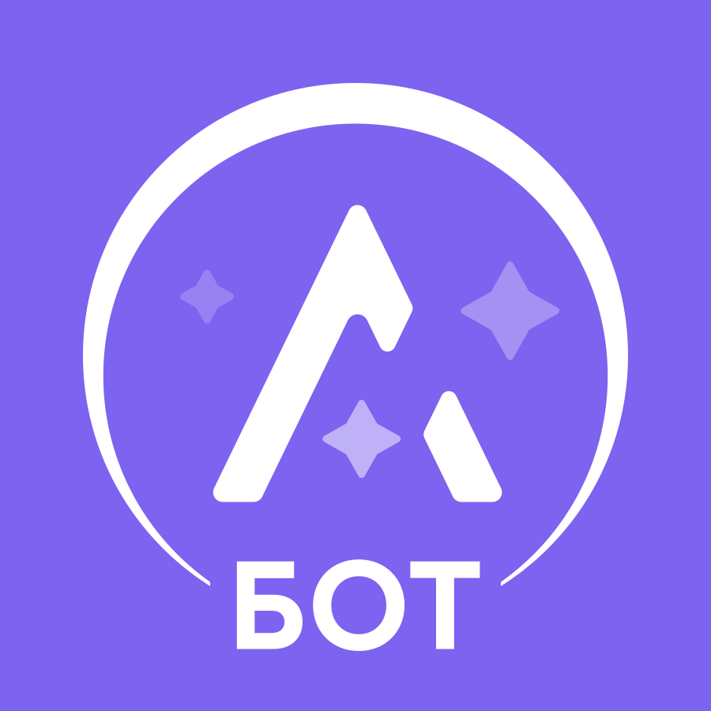
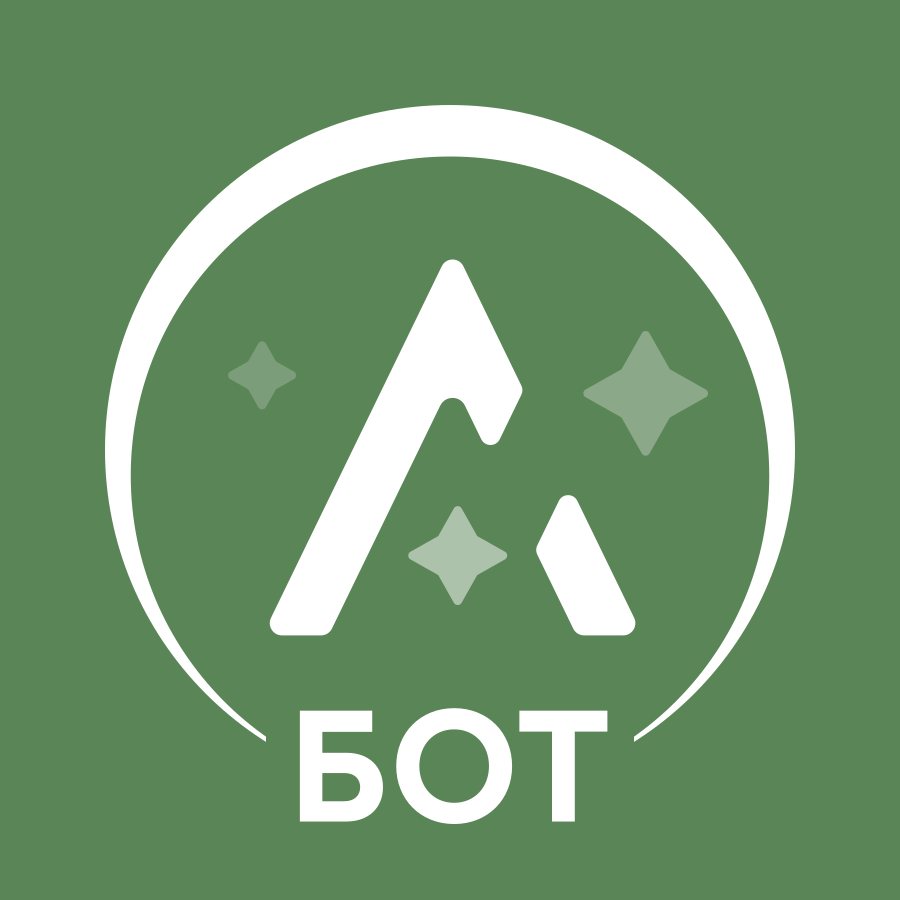

Original · purple #7D63EF · bot/channel avatar

Side-by-side: original purple bot/channel avatar asset vs experimental sage-green swap. Sage hex = #5A8557 (sage-500, text-safe darker per Tau dashboard §8 anchor).


project_ayla_brand_hybrid_usage founder verdict 2026-05-27:
primary canonical wordmark = typography-based lowercase «ayla» в Manrope sage-500
(see design-tokens.md §12 Wordmark). Финальный logo asset = pending
founder designer commission, не Sigma scope.